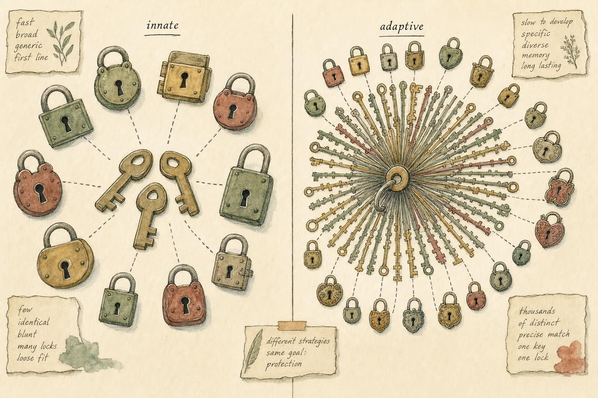
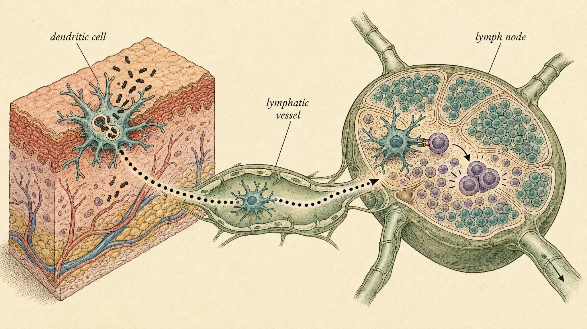

Memory, Precision, and the Handoff
How the body trades speed for specificity , and learns to never forget.
In Chapter 1 we left the battlefield mid-fight. A splinter has broken the skin; bacteria are dividing in the warm wound; neutrophils are already pouring out of the capillaries, macrophages are engulfing whatever they can catch, and the whole neighborhood is red, hot, and swollen. The innate system is fast , it responds in minutes to hours, using a fixed set of pattern-recognition receptors that read the generic molecular signatures of "microbe." But it has two limitations we deliberately flagged and deferred. First, it is imprecise: it recognizes broad categories, not particular pathogens. Second, it is forgetful: it responds to your thousandth cold exactly as clumsily as it responded to your first.
This chapter is about what the innate response was buying time for. While macrophages and neutrophils hold the line, a slower, stranger, far more precise system is being recruited , one that will identify the exact molecular shape of this particular invader, manufacture custom weapons against it, and then, crucially, remember it for decades. That is the adaptive immune system, and the moment it takes over is one of the most elegant events in all of biology: the innate-to-adaptive handoff.
Two immune systems, one body
It helps to hold the contrast explicitly before we build. The innate immune system is what you are born with fully operational. Its receptors are germline-encoded , written directly into your DNA, identical in every one of your macrophages , and they recognize conserved microbial features: bacterial cell-wall lipopolysaccharide, viral double-stranded RNA, the flagellin of a bacterium's whip-like tail. There are only a few hundred such receptors across the whole innate repertoire, and they cannot change during your lifetime. That is why the innate response is instantaneous but generic.
The adaptive immune system works on an entirely different principle. Instead of a few hundred fixed receptors, it generates a repertoire of billions of distinct receptors, each specific for a single molecular shape, and it does this not by encoding each receptor in the genome , that would be impossible, as we will see , but by assembling them combinatorially in each individual cell as it develops. The cost is speed: mounting an adaptive response from scratch takes days, not minutes. The payoff is precision and memory.
The workhorse cell of adaptive immunity is the lymphocyte , a small, round white blood cell that looks, under a microscope, almost boringly featureless: a large nucleus, a thin rim of cytoplasm, nothing dramatic. That plainness is deceptive. Each lymphocyte carries on its surface thousands of copies of a single receptor with a single specificity, and the population of lymphocytes as a whole covers an astronomical range of possible targets. There are two great lineages, distinguished by where they mature and what they do: T cells (matured in the thymus) and B cells (matured in the bone marrow).
Where lymphocytes live, and how they travel
A repertoire of billions of specific cells is useless if it simply sits in one place. The adaptive system is organized around a small set of specialized organs, and understanding this geography makes the rest of the chapter far easier to follow. Lymphocytes are born and undergo their initial development in the primary lymphoid organs: the bone marrow, where both B cells and T cells originate from blood stem cells, and the thymus, a gland behind the breastbone where T cell precursors migrate to complete their education. It is in the thymus that developing T cells first assemble their T cell receptor genes and are tested, brutally, for whether that receptor is useful and safe, a process we return to below.
Once a lymphocyte is mature, it does not stay put. It circulates continuously through the blood and a parallel plumbing system called the lymphatic system, a network of vessels that drains fluid from every tissue in the body and channels it through way-stations called lymph nodes before returning it to the bloodstream. Lymph nodes, along with the spleen (which filters blood rather than lymph) and patches of lymphoid tissue lining the gut and airway called mucosa-associated lymphoid tissue (MALT), are the secondary lymphoid organs: the places where mature, naive lymphocytes wait, and where they will actually meet antigen. A naive lymphocyte's entire working life, until it finds its match, consists of entering a lymph node from the blood through specialized vessels called high endothelial venules, crawling through the node's meshwork for about a day while brushing past thousands of other cells, and then, if nothing matches its receptor, exiting through a lymphatic vessel back into the blood to try another node. This recirculation repeats every twelve to twenty-four hours for the lymphocyte's entire lifespan unless it finds its antigen. It is an enormous, continuous, body-wide search process, and it is why lymph nodes swell during an infection: they are recruiting recirculating lymphocytes and trapping them at the exact site where the matching antigen has just arrived.

Fixed and few, versus assembled and astronomically many." data-image-idx="0" style="display:block;max-width:100%;max-height:75vh;height:auto;width:auto;margin:0 auto;cursor:pointer;">Specificity: one receptor, one shape
Let us define the target precisely. An antigen is any molecule that an adaptive immune receptor can bind. In practice, receptors do not recognize a whole protein or a whole bacterium; they recognize a small patch of it , a particular contour of a few amino acids or a short peptide. That patch is called an epitope. A single virus particle presents dozens of distinct epitopes; a single antigen may carry several. The unit of recognition is always the epitope, and each lymphocyte receptor is tuned to one.
The recognition itself is physical , a lock-and-key complementarity of shape and charge, the same non-covalent chemistry (hydrogen bonds, van der Waals contacts, electrostatic attraction) that governs how any protein binds any ligand. When the receptor's binding surface is geometrically and chemically complementary to the epitope, they stick; when they aren't, they don't. There is no magic. The engineering marvel is not the binding , it is the diversity: generating enough different receptor shapes that at least one already fits any epitope the world can throw at you, including molecules that have never existed before.
The receptors themselves
B cells and T cells solve recognition with related but distinct molecules. The B cell receptor (BCR) is a membrane-anchored antibody , the very same Y-shaped molecule the cell will later secrete in bulk. It binds free-floating antigen directly: a chunk of a bacterial toxin, a protein on a virus's surface, a sugar on a cell wall. It reads three-dimensional shape in solution.
The T cell receptor (TCR) is stranger and more constrained. It cannot see free antigen at all. It only recognizes a short peptide , typically 8 to 15 amino acids , when that peptide is held in the groove of a specialized display molecule on the surface of another cell. That display molecule is the major histocompatibility complex (MHC), and this requirement, called MHC restriction, is fundamental: a T cell responds to peptide-plus-MHC, a composite surface, not to peptide alone (Bradley & Thomas, 2019). We will see why this constraint is a feature, not a bug , it forces T cells to inspect what is happening inside other cells.
The molecular anatomy of a receptor
It is worth looking briefly at the physical structure that makes all of this possible, because the same architectural trick reappears in both receptor families. A B cell receptor, like the antibody it will later become, is built from two identical "heavy" protein chains and two identical "light" protein chains, linked together by sulfur-to-sulfur (disulfide) bonds into a Y shape. Each chain folds into a series of compact protein domains, and the very tip of each arm of the Y , where heavy chain meets light chain , is where antigen binding happens. Within that tip, three short loops of the heavy chain and three short loops of the light chain project outward and do essentially all of the antigen contact; these loops are called complementarity-determining regions (CDRs) because their job is to be complementary in shape to the epitope. It is these six loops, and especially the loop formed at the V-D-J junction, that are hypervariable, meaning that the junctional diversification described below lands almost entirely inside them.
The T cell receptor is built the same way in miniature: two chains, usually called alpha and beta, each contributing CDR loops to a single antigen-binding tip, generated by the T cell's own V(D)J recombination. Unlike the B cell receptor, the TCR does not work alone on the cell surface; it is permanently escorted by a cluster of accessory proteins called the CD3 complex, which does not touch antigen itself but transmits the "I have bound something" signal into the cell once the TCR engages peptide-MHC. A receptor that only recognizes and cannot signal, or only signals and cannot recognize, would be useless; CD3 is the wiring that connects the TCR's recognition event to the cell's internal decision-making machinery.
Where does the diversity come from?
Here is the arithmetic that makes the whole system seem impossible. The human genome contains roughly 20,000 protein-coding genes. Yet the adaptive immune system must produce on the order of 10¹¹ or more distinct antigen receptors. You cannot encode a hundred billion receptors in twenty thousand genes. The genome simply is not large enough. So how does the body do it?
The answer, worked out over decades and honored with a Nobel Prize, is that receptor genes are not inherited intact. They are assembled, piece by piece, in each developing lymphocyte, from a modest library of interchangeable gene segments. This process is V(D)J recombination (Chi et al., 2020; Eugster & Bonifacio, 2018).
V(D)J recombination, step by step
Consider a B cell's antibody heavy chain. Its variable, antigen-binding region is not one gene but a choice made from three separate clusters of segments: the V (variable) segments , around 40 of them , the D (diversity) segments , around 25 , and the J (joining) segments , around 6. During the cell's development, an enzyme complex physically cuts the DNA and stitches together one V, one D, and one J segment, deleting everything in between. Just from the combinatorial choice , 40 × 25 × 6 , you already generate thousands of possibilities for the heavy chain alone.
Then the diversity multiplies. The light chain undergoes its own independent V-J recombination, and the two chains pair combinatorially, multiplying the numbers together. And most powerfully, the joins themselves are imprecise: at each junction, random nucleotides are inserted or trimmed away in a process called junctional diversification, so that even the same V, D, and J segments joined twice will usually produce slightly different sequences. This junctional variability lands exactly in the part of the receptor that contacts antigen , the hypervariable loops , and it is where most of the real diversity is generated. Multiply combinatorial choice by chain pairing by junctional diversity and the estimated potential repertoire exceeds 10¹¹ distinct B cell receptors (Eugster & Bonifacio, 2018).
T cell receptors are built the identical way, from their own V, D, and J libraries, with the same junctional diversification (Bradley & Thomas, 2019). One mechanism, two receptor families, one enormous repertoire.
Two consequences follow immediately and are worth stating plainly. First, the repertoire is generated before the body has ever seen the pathogen. Diversity is created blindly, at random, in anticipation , so that whatever arrives, some lymphocyte with a roughly matching receptor already exists, waiting. This is clonal selection: the antigen does not instruct the cell what receptor to make; it merely selects, from a pre-existing pool, the rare cell that already happens to fit. Second, because the receptors are generated at random, some will inevitably recognize your own molecules. The body must delete or restrain those self-reactive cells , a quality-control process called tolerance , and when it fails, the result is autoimmunity, the subject of Chapter 9.
Quality control: how self-reactive cells are weeded out
Because V(D)J recombination is random, it cannot know in advance which receptor sequences will be harmless and which will bind your own liver, your own thyroid, or your own nerve sheaths. The body compensates with a screening step, and for T cells it happens right there in the thymus, before the cell is ever released into circulation. Each newly assembled T cell is first tested for positive selection: can its receptor bind the body's own MHC molecules at all, even weakly? A receptor that cannot engage MHC in any useful way is discarded, because such a cell could never later recognize peptide-on-MHC anywhere in the body; in practice, the large majority of developing T cells fail this first test and die without ever leaving the thymus. The survivors are then tested for negative selection: are they binding self-peptide-on-self-MHC too strongly? Thymic cells display an unusually broad sample of the body's own proteins, including proteins normally made only in distant organs, specifically to catch T cells that react dangerously to self. A T cell that binds too tightly to a self-peptide is instructed to self-destruct. Only receptors in the narrow middle ground, useful but not dangerously self-reactive, graduate.
B cells undergo an analogous check in the bone marrow: a newly assembled B cell receptor that binds self-antigen too strongly is either eliminated, silenced (rendered permanently unresponsive, a state called anergy), or given a second chance to rearrange a new light chain in a rescue process called receptor editing. None of this screening is perfect. Some self-reactive cells slip through into the circulating repertoire, which is why a second layer, peripheral tolerance, exists outside the primary lymphoid organs; the two-signal requirement for T cell activation described later in this chapter, together with dedicated suppressor cells called regulatory T cells, forms much of that second layer. Chapter 9 examines what happens when both layers fail together.
The handoff: antigen presentation
We now have a repertoire of astonishing diversity sitting mostly in the lymph nodes and spleen, waiting. But there is a logistical problem. The infection is in your finger. The naive T cell that happens to recognize this particular pathogen is one in a million, drifting somewhere in a lymph node in your armpit. How does the rare right lymphocyte ever meet its antigen? And, for T cells, which can only read peptide-on-MHC, how does a peptide from a bacterium in your finger ever get displayed on an MHC molecule where a T cell can inspect it?
This is where the sentinel cells of Chapter 1 return as the protagonists. The bridge between innate and adaptive immunity is antigen presentation, carried out by antigen-presenting cells (APCs) , above all the dendritic cell, with macrophages and B cells playing supporting roles (Hilligan & Ronchese, 2020).
MHC class I and class II: two windows into the cell
Before the handoff makes sense, we need the two flavors of MHC. MHC class I is present on nearly every nucleated cell in your body. It continuously samples proteins made inside the cell , chopping up a representative slice of the cell's own internal protein production and displaying those peptides on the surface. In a healthy cell, these are all "self" peptides and are ignored. But if a virus has hijacked the cell, viral proteins are being made inside, and fragments of them appear in the MHC class I display , a molecular confession that the cell is infected. MHC class I is read by cytotoxic T cells.
MHC class II is restricted to professional APCs. It samples proteins the cell has eaten from outside , engulfed bacteria, extracellular debris, phagocytosed material , and displays those external peptides. MHC class II is read by helper T cells. So the two classes divide the surveillance problem cleanly: class I reports on the cell's internal state ("am I infected?"), class II reports on the environment ("what did I find out there?").
The dendritic cell as courier
Now the sequence. A dendritic cell resident in your infected finger tissue detects the bacteria through its innate pattern-recognition receptors , the same Chapter 1 machinery. It phagocytoses microbial material and, critically, this pathogen sensing does two things at once. First, it loads bacterial peptides onto MHC class II. Second, it triggers the dendritic cell to mature and migrate: it changes its surface molecules, stops eating, and travels through the lymphatic vessels to the nearest lymph node, where naive T cells are densely packed and constantly circulating (Hilligan & Ronchese, 2020).
In the lymph node, the matured dendritic cell becomes a display stand. Thousands of naive T cells brush past it every hour, each testing its unique TCR against the peptide-MHC complexes on the dendritic cell's surface. Almost all fail to bind , their receptors don't fit this peptide. But eventually the rare T cell whose receptor does match arrives, docks, and is activated. The needle in the haystack has been found not by searching but by concentrating: the dendritic cell carried the evidence to the one place where the whole repertoire could be screened against it efficiently.
There is a wrinkle worth naming, because it solves an otherwise puzzling gap. Recall the clean division above: MHC class I displays what a cell made internally, MHC class II displays what a cell ate from outside. That division would leave a hole. Many viruses infect epithelial cells, gut lining, lung tissue, skin, but not dendritic cells themselves. If a dendritic cell never gets infected, how does it ever load viral peptide onto MHC class I to activate a cytotoxic T cell against that virus? The answer is a specialized detour called cross-presentation: certain dendritic cells can take material they engulfed from outside, such as debris from a virus-killed cell, and reroute a fraction of it into the MHC class I pathway instead of the usual class II pathway. This lets a dendritic cell that was never itself infected still prime a cytotoxic T cell response against a virus that infects other tissues entirely. It is an exception to the tidy rule, and it exists because the tidy rule, followed without exception, would leave whole categories of infection invisible to cytotoxic T cells.
Two signals, and the licensing of adaptive immunity
Recognition alone is not enough to activate a naive T cell , and this is one of the most important safety principles in immunology. Full activation requires two signals. Signal one is the TCR binding peptide-MHC: the specificity check. Signal two is co-stimulation , a separate set of surface molecules on the dendritic cell (such as the B7 proteins) that engage receptors on the T cell (such as CD28). Crucially, the dendritic cell only displays these co-stimulatory molecules when its innate receptors have detected genuine danger , a real pathogen (Hilligan & Ronchese, 2020).
This two-signal requirement is elegant. It means a T cell that recognizes an antigen presented without co-stimulation , as would happen with a harmless self-protein displayed by a resting, undanger-signaled cell , does not activate. It may even be switched off. In other words, the innate system doesn't just start the adaptive response; it licenses it, vouching that the antigen is genuinely dangerous. This is the deepest sense in which Chapter 1's danger-sensing and Chapter 2's specificity are inseparable: specificity without a danger check would attack everything, including you.
The two-signal system also has built-in brakes, not just an on-switch. Once activated, a T cell begins to express its own inhibitory receptors, including one called CTLA-4 (cytotoxic T-lymphocyte-associated protein 4), which competes with the activating receptor CD28 for the same co-stimulatory molecules and dampens further activation, and another called PD-1 (programmed cell death protein 1), which is induced on T cells that have been signaling for a long time and, when it engages its partner molecule, turns the cell's activity down. These brakes exist to prevent a normal, licensed response from running too hot or too long once the danger has passed. They are mentioned here mainly because they will reappear later in the course: tumors can exploit PD-1 to switch off the very cytotoxic T cells that would otherwise kill them, which is the biological basis for an entire modern class of cancer therapy that works by releasing this brake.

The courier route: evidence of infection travels to where the whole repertoire can screen it." data-image-idx="1" style="display:block;max-width:100%;max-height:75vh;height:auto;width:auto;margin:0 auto;cursor:pointer;">The specialists: what activated lymphocytes do
Once activated and licensed, a naive lymphocyte proliferates massively , a single cell divides into thousands of identical daughters, all bearing the same receptor. This is clonal expansion, and it is why the adaptive response is slow: you are literally growing an army from a single founder over several days. The expanded clone then differentiates into functional subtypes. Let us take the three major players in turn.
Helper T cells: the coordinators
Helper T cells (marked by the surface molecule CD4, and thus called CD4⁺ T cells) recognize antigen on MHC class II. They do not kill infected cells or make antibodies directly. Instead they coordinate , secreting signaling molecules called cytokines that instruct and amplify everyone else. And the flavor of help they provide depends on what the dendritic cell told them at activation.
This is a subtle and important point from the primary literature: dendritic cells do not merely turn helper T cells on; they instruct what kind of helper the T cell becomes (Hilligan & Ronchese, 2020). Depending on which innate pathogen-sensing pathways were triggered , signaling that this is a virus, versus a worm, versus an extracellular bacterium , the dendritic cell delivers a distinct cytokine context that polarizes the naive CD4⁺ cell toward a specialized subset (T helper 1, T helper 2, T follicular helper, and others). Each subset tailors the response to the class of threat: activating macrophages to kill intracellular pathogens, or licensing B cells to make antibodies, or recruiting other cell types entirely. The helper T cell is the conductor, and the dendritic cell hands it the score.
It is worth naming the major subsets concretely, because each one reappears later in the course whenever a specific disease pattern is discussed. Faced with signals suggesting an intracellular threat such as a virus or a bacterium living inside macrophages, the dendritic cell pushes the naive helper cell toward a T helper 1 (Th1) fate; Th1 cells secrete a cytokine called interferon-gamma (IFN-γ) that arms macrophages to kill the microbes they have already swallowed but could not otherwise destroy. Faced with signals suggesting a large extracellular parasite such as a worm, the dendritic cell instead pushes toward a T helper 2 (Th2) fate; Th2 cells secrete cytokines including interleukin-4 (IL-4) that favor antibody class switching toward the isotype IgE and recruit specialized granule-releasing cells suited to fighting parasites too large to phagocytose. Faced with signals suggesting extracellular bacteria or fungi at a barrier surface, a T helper 17 (Th17) fate predominates, producing the cytokine interleukin-17 to recruit neutrophils in large numbers. A separate subset, T follicular helper (Tfh) cells, does not leave the lymph node at all; instead it migrates into the specialized B cell zones described later in this chapter and personally supervises the antibody response, checking each B cell's work before allowing it to proceed. And a distinct, non-helping lineage, the regulatory T cell (Treg), does the opposite of all of the above: rather than amplifying the response, it actively suppresses other T cells and is one of the main peripheral safeguards against autoimmunity mentioned earlier in this chapter. One naive cell, one antigen, but several possible finished products, chosen by context rather than by the antigen alone.
Cytotoxic T cells: the targeted killers
Cytotoxic T cells (marked by CD8, thus CD8⁺) recognize antigen on MHC class I , the internal-state window present on all nucleated cells. When a cytotoxic T cell's receptor matches a viral peptide displayed on an infected cell's MHC class I, it delivers a lethal hit: it releases proteins that punch pores in the target and enzymes that trigger the target to undergo programmed cell death. The infected cell is destroyed before the virus inside can finish replicating. This is the only efficient way to deal with an intracellular pathogen , antibodies cannot reach inside a living cell, so the cell itself must be sacrificed. The precision is remarkable: the cytotoxic T cell kills only cells displaying its specific peptide, sparing healthy neighbors.
The mechanics of that lethal hit are worth naming, because they explain both its speed and its precision. When the cytotoxic T cell's receptor engages its target, the two cells form a tight, sealed contact zone called an immunological synapse, oriented so that the killer's secretory machinery points directly and only at that one target, not at any bystander cell nearby. Into that sealed space the cytotoxic T cell releases perforin, a protein that inserts into the target's membrane and opens a channel, and a family of enzymes called granzymes that pass through that channel into the target's cytoplasm and trigger the target's own programmed self-destruction machinery from the inside. A second, slower route achieves the same end by a different lock: the cytotoxic T cell can display a surface protein called Fas ligand, which engages a death receptor called Fas on the target and triggers the same internal self-destruct program without perforin at all. Either way, the cell dies by a controlled, contained process rather than by bursting messily, which limits collateral release of viral particles into the surrounding tissue. A single activated cytotoxic T cell can kill several infected targets in sequence, detaching from one synapse and moving to the next, which is part of why an expanded clone of a few thousand cytotoxic T cells can clear an infection distributed across a large volume of tissue within days.
B cells: the antibody factories
B cells recognize free antigen directly through their BCR. Most B cells, however, need help , a matching helper T cell must confirm the same threat before the B cell commits to full activation. This dual requirement (B cell sees antigen, helper T cell endorses it) is another safety interlock. Once fully activated, the B cell proliferates and differentiates into plasma cells , dedicated secretory factories that pump out thousands of antibody molecules per second , and into memory B cells, which we will meet shortly.
The requirement for T cell help is called a T-dependent response, and it is the route for most protein antigens. There is, however, a faster and cruder alternative for a narrower class of antigens. Certain molecules, most notably the repetitive sugar chains (polysaccharides) that coat the outer surface of many bacteria, can cross-link many copies of the B cell receptor at once simply because the same sugar unit repeats hundreds of times across the bacterial surface. This repetitive cross-linking is enough to trigger a T-independent response in a specialized subset of B cells, without waiting for helper T cell confirmation. The trade-off is quality: T-independent responses are faster but produce lower-affinity antibody, generate little memory, and, because young children have not yet fully developed this specialized B cell subset, are poorly effective before roughly two years of age. That practical limitation, that a young immune system responds weakly to bare bacterial polysaccharide, turns out to matter directly for vaccine design, as the closing sections of this chapter will show.
Antibodies: what they are and what they do
An antibody (or immunoglobulin) is the secreted form of the B cell receptor. Its shape is the familiar Y. Understanding what it does requires understanding its two functional halves, because , as recent work stresses , an antibody is a molecule of two collaborating jobs (McConnell & Casadevall, 2025; Lu et al., 2017).
Two domains, two jobs
The two tips of the Y are the Fab regions (fragment, antigen-binding). These contain the variable, hypervariable loops generated by V(D)J recombination , the part that grips the epitope. The specificity of the antibody lives entirely here. The stem of the Y is the Fc region (fragment, crystallizable). It is constant , it does not vary with specificity , and it is the part that talks to the rest of the immune system: it is recognized by receptors on macrophages and neutrophils, and it activates the complement cascade from Chapter 1.
Structurally, the whole Y is built, as noted above, from two heavy chains and two light chains held together by disulfide bonds, with a flexible, unstructured stretch of protein called the hinge region connecting the two Fab arms to the Fc stem. That hinge matters mechanically: it lets the two arms swing independently, so that a single antibody molecule can grip two separate copies of a repeating surface epitope at once, or bridge two nearby pathogen particles together, increasing the effective strength of binding well beyond what either arm could achieve alone. The six CDR loops described earlier sit at the very tip of each Fab arm and are the only part of the vast antibody molecule that differs from one specificity to the next; everything else, hinge, stem, the bulk of the Fab scaffold, is built from a shared, reusable structural template. This is a general design principle worth noting: the immune system concentrates its variability into the smallest possible surface and standardizes everything around it, which is precisely why a hard-won variable region can later be swapped onto a different constant region during class switching without having to be re-engineered.
The classical picture treated these as modular and independent: variable Fab for specificity, constant Fc for effector function, cleanly separable. The 2025 literature complicates this tidy story , there is measurable communication between the variable and constant domains, so that the choice of specificity and the choice of effector output are not fully independent after all (McConnell & Casadevall, 2025). But the modular framing remains the right place to start, because it maps directly onto what antibodies do.
The effector repertoire
Lu and colleagues (2017) organize antibody function into a handful of mechanisms, and the phrase they use , "beyond binding" , is the key insight. Binding is necessary but rarely sufficient:
Neutralization. The simplest mechanism, and pure Fab work: the antibody physically coats a virus or toxin, blocking the molecular surface it uses to enter cells or do damage. A neutralizing antibody bound over a virus's receptor-binding site prevents the virus from docking onto your cells at all. No other cell is needed.
Opsonization. Here the Fab grips the pathogen while the Fc waves like a handle. Phagocytes carry Fc receptors; they grab the antibody's Fc stem and engulf whatever it is attached to. The antibody is a tag that says "eat this" , turning a bacterium the macrophage might otherwise struggle to grip into an easy meal. This directly amplifies the innate phagocytosis of Chapter 1.
Complement activation. Clustered Fc regions on an antibody-coated surface trigger the complement cascade, depositing molecular explosives that can lyse the pathogen directly and further tag it for phagocytosis.
Antibody-dependent cellular cytotoxicity (ADCC). When antibodies coat an infected or aberrant cell, natural killer cells recognize the arrayed Fc regions and kill the tagged cell. The antibody points the killer at its target.
Isotypes: same specificity, different effector output
The Fc region comes in several versions , the antibody isotypes (IgM, IgG, IgA, IgE, IgD) , and each engages a different set of effector mechanisms and body compartments. IgG dominates in blood and is the workhorse of opsonization and long-term protection; IgA guards mucosal surfaces like the gut and airway; IgM is the first isotype made in a response; IgE governs responses to parasites and, unfortunately, allergy (Lu et al., 2017).
Here is the beautiful part. A B cell can change its isotype without changing its specificity, through a DNA-editing process called class switch recombination (CSR). The variable Fab region , the part that recognizes antigen , stays fixed; only the constant Fc region is swapped out (Chi et al., 2020). This means the immune system can keep a hard-won specificity and redeploy it: the same antibody that started as blood-patrolling IgM can be reissued as mucosa-guarding IgA. Specificity is expensive to generate; effector function is cheap to reassign.
And CSR has a partner in the same anatomical structure, the germinal center , a specialized zone in the lymph node where activated B cells iteratively improve. There, an enzyme called AID drives somatic hypermutation (SHM): it introduces point mutations into the variable region at a furious rate, and B cells whose mutated receptors bind antigen better are preferentially selected to survive and keep dividing (Chi et al., 2020). Over successive rounds, this Darwinian process , affinity maturation , sculpts antibodies of progressively higher affinity. The response doesn't just get bigger over time; it gets better (Weisel & Shlomchik, 2017).
The germinal center runs this Darwinian cycle by physically separating mutation from selection into two adjoining compartments. In the dark zone, densely packed B cells divide rapidly and undergo somatic hypermutation, shuffling their receptor sequence with each round of division. The mutated cells then move into the neighboring light zone, where the actual test happens: follicular dendritic cells, a stationary cell type unrelated to the migratory dendritic cells described earlier despite the shared name, hold intact antigen on their surface for weeks at a time, like a fixed target. Mutated B cells compete for a limited amount of this displayed antigen, and only those whose mutated receptor grips it well enough succeed in capturing it. Capturing antigen is not the finish line, though; the B cell must then present a fragment of that antigen to a patrolling Tfh cell, introduced earlier, and only receive a survival signal if the Tfh cell approves. A B cell that fails either test, poor binding in the light zone or no Tfh endorsement, dies by default; germinal centers destroy far more B cells than they graduate. The survivors cycle back into the dark zone for another round of mutation, and the whole loop repeats for one to two weeks, each pass nudging the population toward higher average affinity. It is competitive selection run at cellular speed, and it is the direct cellular reason a response mounted on day fourteen of an infection is qualitatively sharper than the same response on day four.
Memory: the reason any of this matters twice
Everything so far explains how the adaptive system defeats a first infection , slowly, precisely, at the cost of days of clonal expansion. But the defining feature of adaptive immunity, the property that separates it from every innate mechanism and that underlies all of vaccination, is what happens after the fight is won.
When an infection is cleared, the vast expanded army of effector lymphocytes is no longer needed, and most of it dies off , a deliberate contraction that returns the system to baseline. But not all of it. A subset of the expanded clone persists as memory cells: long-lived memory T cells and memory B cells that carry the exact receptor that worked, now present at far higher numbers than the original single naive founder, and poised in a partially pre-activated state (Crotty, 2026; Weisel & Shlomchik, 2017). Alongside them, some plasma cells become long-lived plasma cells that lodge in the bone marrow and secrete protective antibody continuously, for years, even in the absence of the pathogen.
This transforms the arithmetic of a second encounter. On first exposure , the primary response , the right lymphocyte was one in a million, and it took days to find the antigen, activate, and expand. On a second exposure to the same pathogen , the secondary response , the specific cells are already numerous, already primed, and in the case of memory B cells, already carrying high-affinity, class-switched receptors sculpted during the first response. The result: the lag time collapses, and the response is faster, larger, and of higher quality. Often the pathogen is neutralized before you ever feel sick.
How long is memory?
Astonishingly long. Crotty's (2026) synthesis of the field notes that memory B cells raised by some live viral vaccines can persist for over sixty years , effectively, for life. Integrating decades of vaccine data with modern findings from COVID-19 mRNA vaccines, the review builds a picture in which durable protection rests on the coordinated persistence of memory B cells, long-lived plasma cells secreting circulating antibody, and memory T cells , layered defenses with different kinetics and lifespans (Crotty, 2026; Weisel & Shlomchik, 2017).
Not all memory cells are the same kind of cell, and the distinction explains a pattern many people have noticed without knowing why: sometimes you fight off a familiar illness in a day with barely a symptom, and other times you feel unwell for a few days before recovering unusually fast. Memory T cells split broadly into central memory T cells (Tcm), which recirculate through lymph nodes much like naive cells and are slower to respond but expand into large new effector armies, and effector memory T cells (Tem), which patrol peripheral tissues directly, skin, gut, lung, and can act within hours of re-encountering antigen without ever routing through a lymph node first. A robust secondary response typically draws on both: an immediate, local skirmish from tissue-resident effector memory cells while a larger reinforcing wave is mobilized from central memory. Memory B cells show a parallel logic, and one particular feature is worth highlighting: the germinal center does not export only its single best-affinity clone into the memory pool. It deliberately retains a range of memory B cells, including some of only modest affinity for the original antigen. This apparent inefficiency is a hedge. If the pathogen returns in a slightly altered form, a lower-affinity memory cell that recognizes the altered version, even weakly, can still respond and be sent through another round of affinity maturation, while a memory pool consisting only of perfectly fitted clones might recognize nothing at all.
When the target moves: why memory is not a permanent guarantee
Honesty requires stating a limitation plainly. Adaptive immunity's entire strategy rests on specificity, matching a receptor to a particular epitope, and specificity cuts both ways. A memory response built against one exact epitope can lose much of its speed and power if that epitope changes. This is exactly what happens with influenza virus, whose surface proteins accumulate small mutations year over year, a process called antigenic drift. Enough drift accumulates most years that last year's memory B cells and antibodies bind the new strain poorly, which is the actual, mechanistic reason the influenza vaccine is reformulated annually while a vaccine against a genetically stable virus like measles is not: measles' surface proteins have changed comparatively little across generations, so memory laid down by a childhood vaccine still matches a currently circulating measles virus decades later, whereas last year's flu memory often does not match this year's flu virus well. This same logic, memory that is only as good as the match between the epitope it was built against and the epitope it later meets, is a central design constraint for any vaccine program and will recur when this course covers viral evolution in more depth. It is also why reinfection with the ordinary cold-causing coronaviruses and rhinoviruses is unremarkable: those viruses circulate in many drifting variants simultaneously, and immunity to one variant offers only partial protection against its cousins.
A second, separate limitation is simple waning: even a stable antigen can see its circulating antibody level fall over months to years as long-lived plasma cells gradually decline in number, even while memory B and T cells persist quietly in the background, ready to be reactivated. This is the biological basis for a booster dose: a booster does not usually need to teach the immune system something new, since the memory cells are typically still present; it simply re-exposes the antigen, triggering the fast, high-affinity secondary response described above and driving circulating antibody back up to a protective level.
Vaccination, mechanistically
Now we can define a vaccine with full mechanistic precision. A vaccine is a preparation that presents antigen , and, critically, the danger signals needed to license a response , to the adaptive immune system without causing the disease. It might be a weakened (attenuated) live virus, a killed pathogen, a purified protein plus an adjuvant that supplies innate danger signals, or an mRNA that instructs your own cells to make the antigen transiently. Whatever the format, the goal is identical: run a primary response and its germinal-center affinity maturation on a harmless stand-in, so that memory cells and long-lived plasma cells are laid down. Then, when the real pathogen arrives, your first exposure to it is met with a secondary response. The whole enterprise of vaccination is nothing more, and nothing less, than deliberately installing immunological memory.
Every major vaccine platform is simply a different engineering answer to the same two-part problem this chapter has already laid out: supply an antigen the adaptive system can build a memory response against, and supply enough of a danger signal to obtain co-stimulation, without supplying an actual infection. A live-attenuated vaccine, such as the combined measles, mumps, and rubella (MMR) vaccine or the varicella (chickenpox) vaccine, uses a version of the virus weakened until it replicates poorly enough to avoid causing disease in a person with a normal immune system, while still replicating just enough to mimic a real infection closely, including natural antigen presentation on MHC class I and robust dendritic cell activation; this tends to produce especially strong and durable memory, consistent with the multi-decade persistence Crotty (2026) describes. An inactivated (killed) vaccine, such as the injectable polio vaccine, uses a whole pathogen that has been chemically killed so it cannot replicate at all; because it cannot replicate, it typically needs to be given in multiple doses and often paired with an adjuvant to generate comparable memory. A subunit or recombinant protein vaccine, such as the hepatitis B vaccine or the human papillomavirus (HPV) vaccine, presents only a single purified surface protein of the pathogen rather than the whole organism, minimizing side effects at the cost of needing an adjuvant to supply the danger signal that a whole pathogen would have provided on its own. A toxoid vaccine, such as the tetanus and diphtheria vaccines, uses a chemically inactivated version of a bacterial toxin, training memory against the toxin itself rather than the bacterium, since in these diseases the toxin, not the bacterium, does the damage. A conjugate vaccine, such as the vaccine against Haemophilus influenzae type b (Hib) or against pneumococcus, chemically links a bacterial polysaccharide, which alone would trigger only a weak, T-independent response of the kind described earlier and would barely work in infants, to a carrier protein that helper T cells readily recognize; this conversion recruits full T-dependent help, germinal-center formation, and lasting memory for an antigen that could not achieve any of that unassisted. Finally, the messenger RNA (mRNA) vaccines developed for COVID-19 take yet another route: they deliver genetic instructions that direct a person's own cells to manufacture a single viral protein transiently, which is then naturally processed and displayed on MHC class I and class II exactly as if the cell had encountered the real infection, priming both antibody and T cell memory without ever introducing the pathogen itself.
Two supporting details tie these platforms back to mechanisms already introduced. First, an adjuvant, a substance such as an aluminum salt included in many non-live vaccines, exists purely to supply an artificial danger signal, standing in for the pattern-recognition-receptor triggering that a real pathogen would provide, so that the dendritic cell delivers co-stimulation and licenses the response rather than tolerizing against it. Second, most vaccines require multiple doses spaced weeks to months apart precisely because of the germinal-center biology in this chapter: a single exposure primes the response and starts affinity maturation, but a second exposure, once the first wave of memory and germinal-center B cells has formed, drives a secondary-style boost that pushes affinity and memory-cell numbers substantially higher than a single dose would achieve alone. Population-level protection built this way, enough vaccinated individuals carrying durable memory, also indirectly protects people who cannot be vaccinated or whose own response is weak, by reducing the pathogen's opportunities to spread through a community; this is the basic logic behind the public-health concept of herd immunity, an epidemiological topic beyond the scope of this course but a direct downstream consequence of the cellular mechanisms described here. None of this is medical guidance about any specific vaccine or schedule; it is simply what the underlying cell biology of memory formation predicts and explains.
This is also, at last, the full answer to what Chapter 1's innate system was buying time for. Those first frantic days of inflammation, neutrophil recruitment, and macrophage phagocytosis were holding the pathogen in check while the slow, precise adaptive machinery assembled , screened the repertoire, expanded the right clone, matured its antibodies, and installed the memory that will make the next encounter almost effortless. Innate immunity fights the battle in front of you; adaptive immunity wins the war for the rest of your life.
Memory B cells to some live viral vaccines can persist for over sixty years , a molecular record of an infection the body may have fought before the person was old enough to remember it.
After Crotty (2026), Immunological memory to vaccines
Putting the handoff together: a worked example
Return to the splinter. Trace the full arc now, with everything named.
Hours 0-12. Bacteria divide in the wound. Tissue-resident macrophages and dendritic cells detect them through innate pattern-recognition receptors. Inflammation begins; neutrophils flood in. This is Chapter 1 , fast, generic, and buying time.
Hours 12-48. A dendritic cell that phagocytosed bacteria matures, loads bacterial peptides onto MHC class II, upregulates co-stimulatory molecules (because it sensed genuine danger), and migrates to the draining lymph node.
Days 2-4. In the node, the rare naive CD4⁺ helper T cell whose TCR fits the presented peptide docks, receives signal one and signal two, and is activated and instructed toward an appropriate helper subtype. It clonally expands. Meanwhile a B cell whose BCR binds a bacterial antigen, endorsed by a matching helper T cell, is activated too.
Days 4-10. In the germinal center, activated B cells undergo somatic hypermutation and affinity maturation; some class-switch their isotype. Plasma cells begin secreting antibody , which neutralizes toxins, opsonizes bacteria for phagocytes, and fixes complement. The infection is cleared.
Days 10 onward. The effector army contracts. Memory T cells, memory B cells, and long-lived plasma cells persist. If these bacteria ever return, the response will be a secondary one , measured in hours, not days.
Every step is a specific, nameable mechanism, and every step depends on the one before. The innate danger check licenses the adaptive response; antigen presentation delivers the evidence; clonal selection finds the needle; clonal expansion builds the army; affinity maturation sharpens the weapons; and memory banks the whole solution for next time.
Key Takeaways
- Innate immunity uses a few hundred fixed, germline-encoded receptors , fast but generic and forgetful. Adaptive immunity uses a repertoire of billions of unique receptors , slow to start but exquisitely specific and capable of memory.
- Each lymphocyte bears one receptor with one specificity. B cell receptors bind free antigen directly; T cell receptors read short peptides only when displayed on MHC molecules (MHC restriction).
- The astronomical receptor diversity cannot be genome-encoded; it is assembled in each cell by V(D)J recombination , combinatorial segment choice plus imprecise, junctional diversification , generating over 10¹¹ possibilities before any pathogen is seen (clonal selection).
- Dendritic cells bridge innate and adaptive immunity: they sense danger, carry antigen to lymph nodes, present it on MHC, and provide co-stimulation. Full T cell activation requires two signals , specificity and a danger check , which is why the innate system licenses the adaptive one.
- Helper (CD4⁺) T cells coordinate via cytokines; cytotoxic (CD8⁺) T cells kill infected cells displaying peptide on MHC class I; B cells differentiate into plasma cells that secrete antibodies.
- Antibodies work "beyond binding": Fab confers specificity, Fc drives effector functions , neutralization, opsonization, complement activation, ADCC. Class switch recombination changes isotype (Fc) without changing specificity (Fab); somatic hypermutation drives affinity maturation.
- Immunological memory , memory B and T cells plus long-lived plasma cells , makes the secondary response faster, larger, and higher in affinity, can last over 60 years, and is the entire mechanistic basis of vaccination.
We have now built both arms of the immune system and the handoff between them. But the same random receptor generation that lets you recognize any pathogen also, inevitably, produces cells that recognize you , and the two-signal safeguards that normally restrain them can fail. In coming chapters we turn to what happens when the system loses its balance: when inflammation runs unchecked, when tolerance breaks and the response turns inward (autoimmunity, Chapter 9), and how everyday forces like exercise and stress reshape the very cell populations we have just introduced (Chapters 6 and 7).
References
Bradley, P., & Thomas, P. G. (2019). Using T cell receptor repertoires to understand the principles of adaptive immune recognition. Annual Review of Immunology, 37, 547-570. https://doi.org/10.1146/annurev-immunol-042718-041757
Chi, X., Li, Y., & Qiu, X. (2020). V(D)J recombination, somatic hypermutation and class switch recombination of immunoglobulins: Mechanism and regulation. Immunology, 160(3), 233-247. https://doi.org/10.1111/imm.13176
Crotty, S. (2026). Immunological memory to vaccines. Immunity. https://doi.org/10.1016/j.immuni.2026.02.019
Eugster, A., & Bonifacio, E. (2018). Assessing human B cell repertoire diversity and convergence. Immunology & Cell Biology, 96(10), 1092-1103. https://pubmed.ncbi.nlm.nih.gov/29944762/
Hilligan, K. L., & Ronchese, F. (2020). Antigen presentation by dendritic cells and their instruction of CD4+ T helper cell responses. Cellular & Molecular Immunology, 17(6), 587-599. https://pmc.ncbi.nlm.nih.gov/articles/PMC7264306/
Lu, L. L., Suscovich, T. J., Fortune, S. M., & Alter, G. (2017). Beyond binding: Antibody effector functions in infectious diseases. Nature Reviews Immunology, 18(1), 46-61. https://doi.org/10.1038/nri.2017.106
McConnell, S. A., & Casadevall, A. (2025). New insights into antibody structure with implications for specificity, variable region restriction and isotype choice. Nature Reviews Immunology. https://doi.org/10.1038/s41577-025-01150-9
Weisel, F., & Shlomchik, M. (2017). Remembrance of things past: Long-term B cell memory after infection and vaccination. Frontiers in Immunology, 10, 1787. https://doi.org/10.3389/fimmu.2019.01787